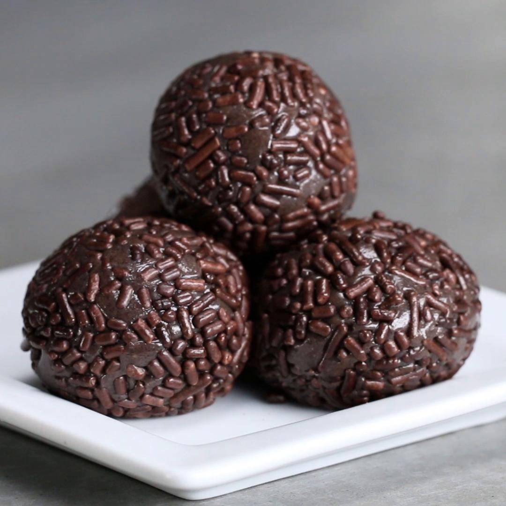

Brigadeiro Recipe

Description
Brazilian truffle dessert, present in all birthday parties.
Ingredients
- 1 tablespoon butter
- 14 oz sweetened condensed milk
- ¼ cup cocoa powder
- 1 cup chocolate sprinkle, as needed
Steps
-
In a pot over low heat, melt the butter, condensed milk, and cocoa powder,
stirring continuously until you can see the bottom of the pot for 2-3
seconds when dragging a spatula through.
- Pour onto a greased plate, then chill for 1 hour.
- Shape and roll the chilled mixture into balls.
- Roll the balls in chocolate sprinkles.
- Enjoy (and hide a few for later)!
Sources